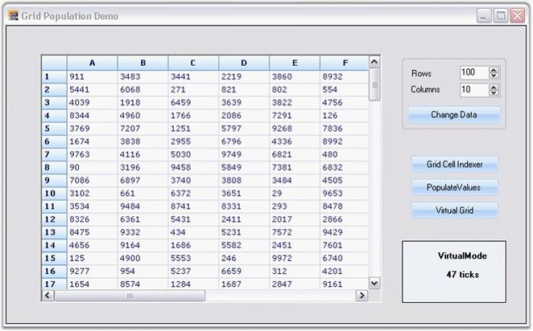

Essential Grid control supports large amount of data without a performance hit.
Example:
This example will step you through following three ways of populating an Essential Grid:
· The first technique just loops through the cells and uses an indexer on the Grid control to set the values.
· The second uses the PopulateValues method that optimally places data from a data source into a grid range.
· The third technique uses an Essential Grid in a virtual manner.
You can specify the size of the grid that is to be populated while running the sample and then you can try all the three methods to compare the performance. However, the .NET Framework JIT slows the first population owing to one-time jitting of the code.
1. Using Indexer
This technique loops through the cells and uses an indexer on the Grid control to set the values.
a. Using C#
|
[C#]
for (int i = 0; i < this.numArrayRows; ++i) for (int j = 0; j < this.numArrayCols; ++j) this.gridControl1[i + 1, j + 1].CellValue = this.intArray[i, j]; |
b. Using VB.NET
|
[VB.NET]
For i As Integer = 0 To Me.numArrayRows - 1 For j As Integer = 0 To Me.numArrayCols - 1 Me.gridControl1(i + 1, j + 1).CellValue = Me.intArray(i, j) Next j Next i |
2. Populating Values
PopulateValues method is used to move values from a given data source into the specified grid range. The first parameter specifies range of destination cells where the data is to be copied and the second parameter specifies the data source to the destination cells.
a. Using C#
|
[C#]
gridControl1.Model.PopulateValues(GridRangeInfo.Cells(top, left, bottom, right), this.intArray); |
b. Using VB.NET
|
[VB.NET]
gridControl1.Model.PopulateValues(GridRangeInfo .Cells(top, left, bottom, right), Me.intArray) |
3. Implementing Virtual Mode
Three events need to be handled in order to implement a virtual mode. They perform the following actions:
· Determine number of rows
· Determine number of columns
· Pass value to a cell from a data source.
a. Using C#
|
[C#]
// Determine number of rows. this.gridControl1.QueryRowCount += new GridRowColCountEventHandler(GridQueryRowCount); private void GridQueryRowCount(object sender, GridRowColCountEventArgs e) { e.Count = this.numArrayRows; e.Handled = true; }
// Determine the number of columns. this.gridControl1.QueryColCount += new GridRowColCountEventHandler(GridQueryColCount); private void GridQueryColCount(object sender, GridRowColCountEventArgs e) { e.Count = this.numArrayCols; e.Handled = true; }
// Pass value to a cell from a given data source. this.gridControl1.QueryCellInfo += new GridQueryCellInfoEventHandler(QueryCellInfoHandler); private void GridQueryCellInfo(object sender, GridQueryCellInfoEventArgs e) { if(e.ColIndex > 0 && e.RowIndex > 0) { // By using indexers, pass value to a cell from a given data source. e.Style.CellValue = this.intArray[e.RowIndex - 1, e.ColIndex - 1]; e.Handled = true; } } |
b. Using VB.NET
|
[VB.NET]
' Determine number of rows. Private Me.gridControl1.QueryRowCount += New GridRowColCountEventHandler(AddressOf GridQueryRowCount) Private Sub GridQueryRowCount(ByVal sender As Object, ByVal e As GridRowColCountEventArgs) e.Count = Me.numArrayRows e.Handled = True End Sub
// Determine the number of columns. Private Me.gridControl1.QueryColCount += New GridRowColCountEventHandler(AddressOf GridQueryColCount) Private Sub GridQueryColCount(ByVal sender As Object, ByVal e As GridRowColCountEventArgs) e.Count = Me.numArrayCols e.Handled = True End Sub
// Pass value to a cell from a given data source. Private Me.gridControl1.QueryCellInfo += New GridQueryCellInfoEventHandler(AddressOf QueryCellInfoHandler) Private Sub GridQueryCellInfo(ByVal sender As Object, ByVal e As GridQueryCellInfoEventArgs) If e.ColIndex > 0 AndAlso e.RowIndex > 0 Then
// By using indexers, pass value to a cell from a given data source. e.Style.CellValue = Me.intArray(e.RowIndex - 1, e.ColIndex - 1) e.Handled = True End If End Sub |

Figure 195: Grid Population
A sample demonstrating this feature is available under the following sample installation path.
<Install Location>\Syncfusion\EssentialStudio\[Version Number]\Windows\Grid.Windows\Samples\2.0\Performance\Trader Grid Test Demo